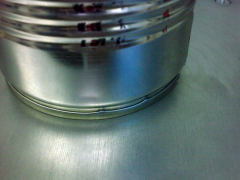
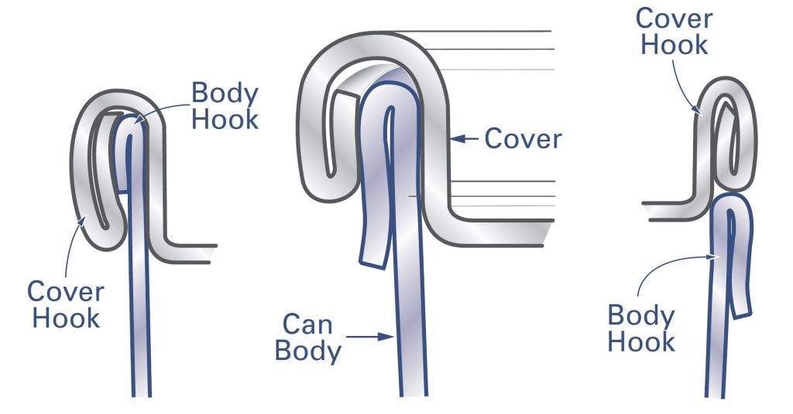
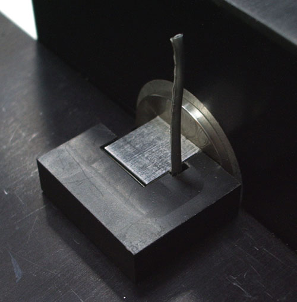

🔍
O guia técnico completo sobre recravação dupla de latas metálicas - em português. Medições, defeitos, equipamentos e procedimentos para a indústria de embalagens.

A recravação é o fechamento de uma lata formado pelo dobramento do curl da tampa com o flange do corpo. Entenda como funciona.
Ler artigo →
Visão geral completa de todas as dimensões críticas: gancho do corpo, gancho da tampa, sobreposição, espessura e mais.
Ler artigo →
Como identificar defeitos de recravação através da inspeção visual. Guia completo com imagens de referência.
Ler artigo →
Um dos defeitos mais críticos da recravação dupla. Aprenda a identificar e prevenir a recravação falsa em sua linha de produção.
Ler artigo →
Guia passo a passo para configuração correta da recravadeira. Inclui vídeos demonstrativos do processo.
Ler artigo →
A sobreposição é o parâmetro mais crítico da recravação. Entenda como calculá-la e quais são os valores aceitáveis.
Ler artigo →
As rugas no gancho da tampa são um indicador importante da qualidade da recravação. Veja como classificar e avaliar.
Ler artigo →
O gancho do corpo é formado pelo flange do corpo da lata durante a recravação. Dimensões típicas e como medir corretamente.
Ler artigo →Todos os termos técnicos de recravação em inglês com suas traduções em português e definições.
Ver glossário →